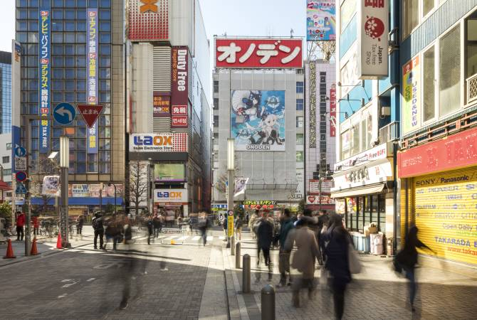
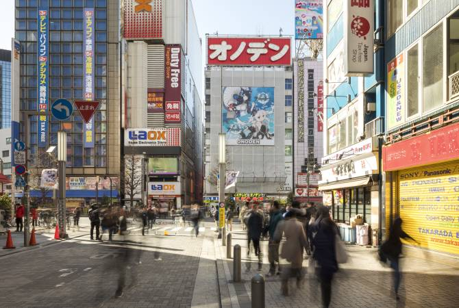

독자적인 문화가 숨쉬는 활기 넘치는 전자상가
제2차 세계대전 후 암시장의 중심지로 시작된 아키하바라 전자상가는 그 후 전세계에서 찾아오는 사람들에게 각종 전기제품과 IT 제품을 판매하는 상점들이 즐비한 일본 테크놀로지의 집결지가 되었습니다. 최근에는 게임과 만화, 애니메이션의 열광적인 팬, 소위 말하는 오타쿠의 문화 거점이기도 합니다. 아키하바라는 팝 아이돌과 코스플레이어 등 일본의 서브컬처를 각별히 사랑하는 사람들의 성지입니다. 아키하바라 거리를 산책하면서 독자적인 문화를 체험해 봅시다.
힌트
-
전자마트 및 부품전문점에서 면세를 이용하여 저렴하게 쇼핑하기
-
애니메이션의 성지를 직촬
-
적극적으로 활동하는 팝 아이돌과 개성적인 의상으로 치장한 코스플레이어들과의 만남
교통편
‘아키하바라’역에는 JR 야마노테선, 게이힌 도호쿠선, 소부선 또는 도쿄메트로 히비야선을 이용하여 쉽게 찾아가실 수 있습니다.
하네다 공항에서: 리무진버스로 50분, 전철로 45분.
나리타 공항에서: 리무진버스로 2시간, 전철로 1시간 30분.
신주쿠역에서: JR 소부선으로 아키하바라역까지 18분.
도쿄역에서: JR 야마노테선으로 아키하바라역까지 4분.
암시장에서 전자상가로
제2차 세계대전 이후 일본에서 전기부품 노점상들이 모이는 암시장이 있었던 아키하바라 거리에는 현재 전기제품과 관련된 온갖 물건들을 판매하는 정규 전기제품 판매점이 즐비합니다. 부품전문점이 늘어서 있고, 라옥스나 요도바시 카메라 등과 같은 가전마트들이 격전을 벌이고 있습니다. ‘아키하바라 라디오회관’이나 ‘아키하바라 라디오센터’에는 테크놀로지 부품과 캐릭터 관련 상품을 취급하는 매장이 많으며, 만화, 애니메이션, 팝 아이돌, 게임 등 각 매장마다 수많은 열성 팬들이 발 디딜 틈도 없이 모여듭니다. 많은 매장에서 면세제도를 이용할 수 있기 때문에 알뜰한 쇼핑을 할 수 있습니다.
 

서브컬처 혁명, 오타쿠가 즐기는 장소
오타쿠 문화의 구성요소인 게임, 만화, 피규어 컬렉션과 애니메이션. 이러한 서브컬처의 발상지는 뭐니 뭐니 해도 아키하바라입니다. 오타쿠들이 제각각 열중하는 가게가 많은 전기부품점 사이사이에 끼어 있습니다. 예를 들어, ‘아키하바라 라디오회관’이나 ‘AKIBA 컬처즈 ZONE’에는 애니메이션, 만화, 게임 전문점이 많이 입점해 있습니다. ‘건담 카페’의 선반에는 캐릭터 상품이 산처럼 쌓여있고, ‘도쿄 레저 랜드’에는 바닥에서 천장까지 전부 캡슐토이 기계(가차폰)로 채워져 있는 등 아키하바라 특유의 게임 문화를 즐길 수 있습니다.
팝 아이돌과 팝 컬처
아키하바라는 일본 팝 컬처의 또 다른 막강한 요소인 ‘팝 아이돌’의 거점이기도 합니다. ‘AKB48 극장’은 현재 가장 인기 있는 아이돌 그룹 중 하나인 AKB48가 탄생한 곳이며, 지금도 열렬한 팬들이 좋아하는 멤버를 잠깐이라도 보기 위해 모여들고 있습니다. 코스플레이어들이 자신들이 좋아하는 캐릭터로 변신해 찾아오는 주말이라도 되면 이 거리는 거대한 인파로 붐빕니다. 코스프레 스튜디오나 촬영 스튜디오에 가서 여러분도 코스프레를 즐겨 보시면 어떠세요?
기타 정보